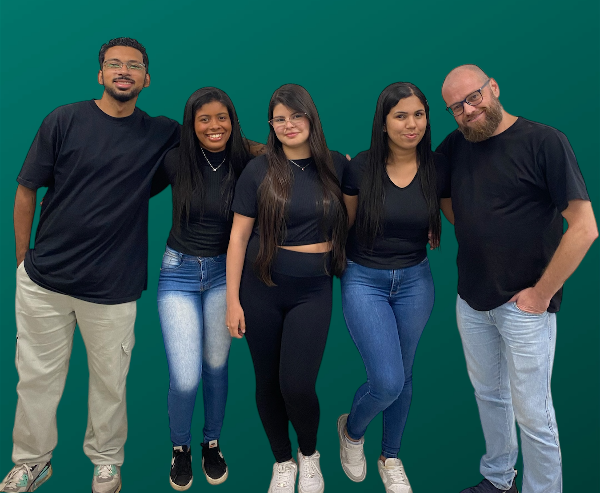

COMPASS nas redes:
 @redecompass
@redecompass
 Rede Compass
Rede Compass
 @REDECOMPASS
@REDECOMPASS
A COMPASS foi criada com o objetivo de diminuir o grande índice de desperdícios em grandes corporações, direcionado para onde precisa realizando uma mediação entre as grandes empresas e pessoas em situações de desemprego que tenham acesso à internet ou, ongs que buscam recursos como alimentos para fazerem suas ações beneficentes. Na COMPASS, acreditamos no poder da colaboração e da solidariedade. Esse projeto além de ajudar os beneficiários também gera incentivos fiscais para as empresas que participam dessa colaboração solidária. Venha fazer parte dessa missão e nos ajude a criar um mundo melhor.
Cada ação conta, e a sua participação pode transformar vidas. Se você é uma empresa interessada em fazer a diferença para ajudar sua comunidade, entre em contato conosco. Juntos, podemos construir um futuro onde todos tenham acesso ao alimento necessário. Em vez de permitir que grandes quantidades de alimentos sejam desperdiçadas devido à proximidade da data de validade, as empresas podem doar esses produtos algumas semanas antes do vencimento, beneficiando pessoas em situação de necessidade. Além de contribuir para a redução do desperdício e apoio social, essa ação pode proporcionar incentivos fiscais, especialmente para doações de alimentos não perecíveis.
Existem várias maneiras de você contribuir para nossa causa:
Estamos trabalhando para fornecer alimentos saudáveis para crianças em escolas públicas. Este projeto visa melhorar a nutrição e o bem-estar das crianças.
Operamos um banco de alimentos que coleta, armazena e distribui alimentos para famílias em situação de vulnerabilidade.
SSe você é uma Ong ou pessoa física em situação desemprego e deseja adquirir o benefício preencha o formulário abaixo ou envie um e-mail para redecompass@ajuda.com.br.
@redecompass
Rede Compass
@REDECOMPASS